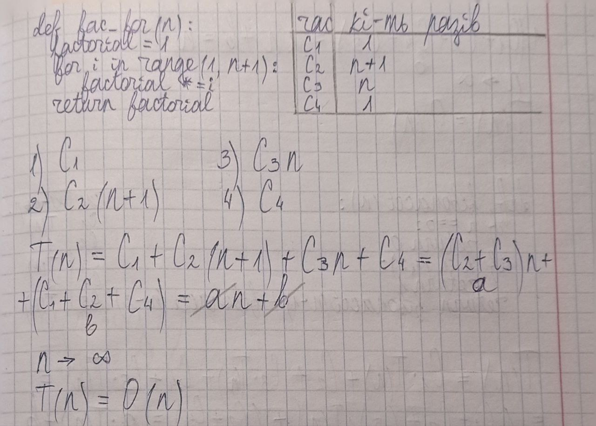
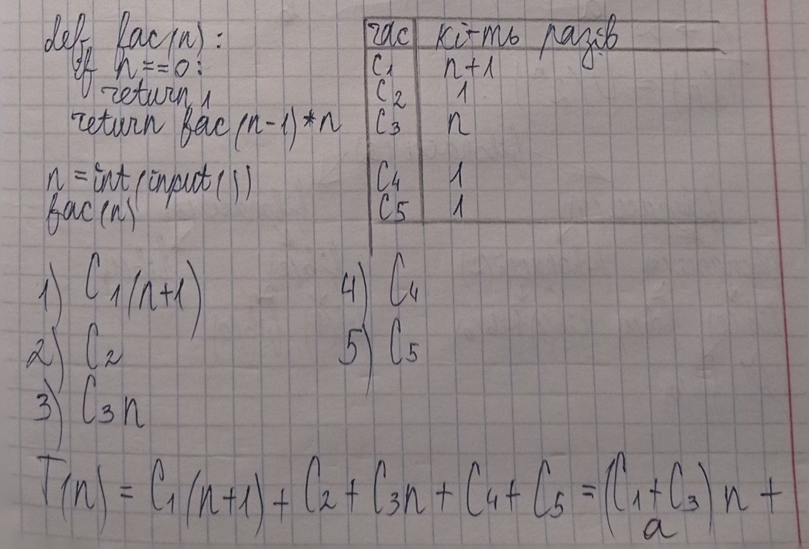
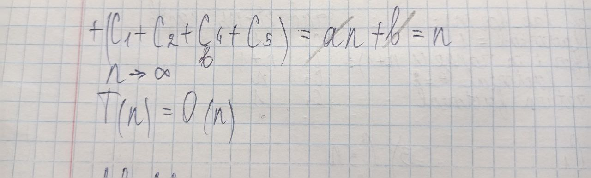
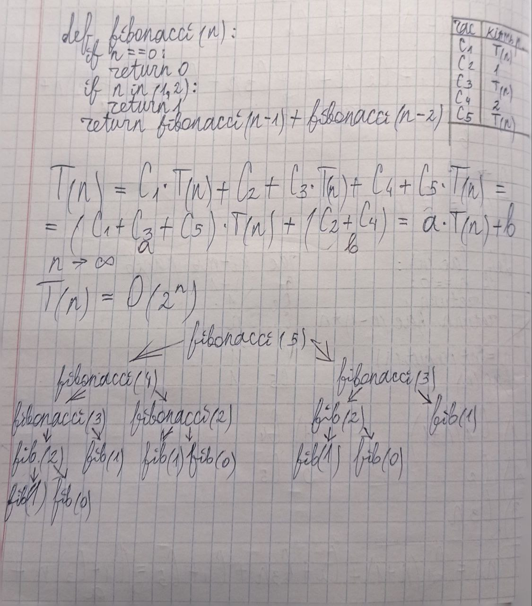
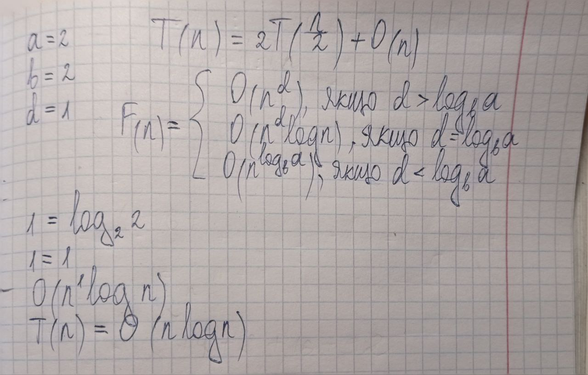

def FacSimple(n):
# Обчислення факторіала за допомогою цикла while
factorial = 1
i = 1
while i <= n:
factorial *= i
i += 1
return factorial
# Приклад виклику функції
print(FacSimple(5)) # Виведе: 120120def FacSimple(n):
# Обчислення факторіала за допомогою цикла while
factorial = 1
i = 1
while i <= n:
factorial *= i
i += 1
return factorial
# Приклад виклику функції
print(FacSimple(5)) # Виведе: 120120def fac_for(n):
factorial = 1
for i in range(1, n + 1):
factorial *= i
return factorial
# Тестування:
fac_for(5) # Результат: 120120
def fac(n):
# Обчислення факторіала через рекурсію
if n == 0:
return 1
return fac(n-1) * n
# Введення числа
n = int(input())
# Виведення результату
print(fac(n)) 5120import math
math.factorial(5)120

def fibonacci(n):
#Рекурсивне обчислення n-го числа Фібоначчі
if n == 0:
return 0
if n in (1, 2):
return 1
return fibonacci(n - 1) + fibonacci(n - 2)
print(fibonacci(30))832040
def merge(left, right):
# Зливає два відсортованих масиви left і right у один
result = []
i, j = 0, 0
while i < len(left) and j < len(right):
if left[i] <= right[j]:
result.append(left[i])
i += 1
else:
result.append(right[j])
j += 1
# Додаємо залишкові елементи
result += left[i:]
result += right[j:]
return result
def mergesort(lst):
# Рекурсивна функція сортування з використанням попередньої функції
if len(lst) < 2:
return lst
middle = len(lst) // 2
left = mergesort(lst[:middle])
right = mergesort(lst[middle:])
return merge(left, right)
# Приклад масиву
a = [6, 5, 3, 1, 8, 7, 2, 4]
# Виклик функцій
sorted_a = mergesort(a)
print(sorted_a) # Виведе: [1, 2, 3, 4, 5, 6, 7, 8][1, 2, 3, 4, 5, 6, 7, 8]
Ω-нотація описує найкращу можливу асимптотику алгоритму, тобто мінімальний час, який потрібен для виконання задачі. Якщо ми говоримо, що складність алгоритму є Ω(f(n)), то це означає, що для великих значень n час виконання алгоритму буде не меншим за f(n).
Складність цієї функції в O-нотації буде \(O(N^3)\), оскільки найбільший степінь \(N^3\) домінує для великих значень N.
Складність цієї функції в O-нотації буде \(O(N^{10})\), оскільки найбільший степінь \(N^{10}\) домінує для великих значень N.
Оскільки \(N^{1.3}\) зростає швидше за \(\log_2(N)\), складність буде \(\log_2(N)\).
Розпаралелювання дозволяє виконувати кілька частин алгоритму одночасно на різних процесорах чи ядрах, що підвищує швидкість виконання. Алгоритми, які можна розпаралелити, це сортування злиттям (merge sort) та обчислення факторіалу за допомогою рекурсії.
Основні способи підвищення швидкості включають паралелізацію, використання більш ефективних алгоритмів, кешування та оптимізацію коду. Найефективнішим є вибір оптимальних алгоритмів, таких як сортування злиттям замість бульбашкового сортування.